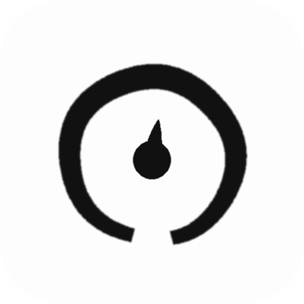

Brushstroke ring + paint drop. Four takes, shown at 144 / 96 / 48 px on light + dark.
Monochrome. The drop is a just-fallen bead of ink.

Your green, as a single drop of paint. Color accent where it counts.
Nearly-closed ring, thinner stroke; reads more "circle" than "ensō".
Irregular ink blot with satellite specks — messier, more ink-spill.